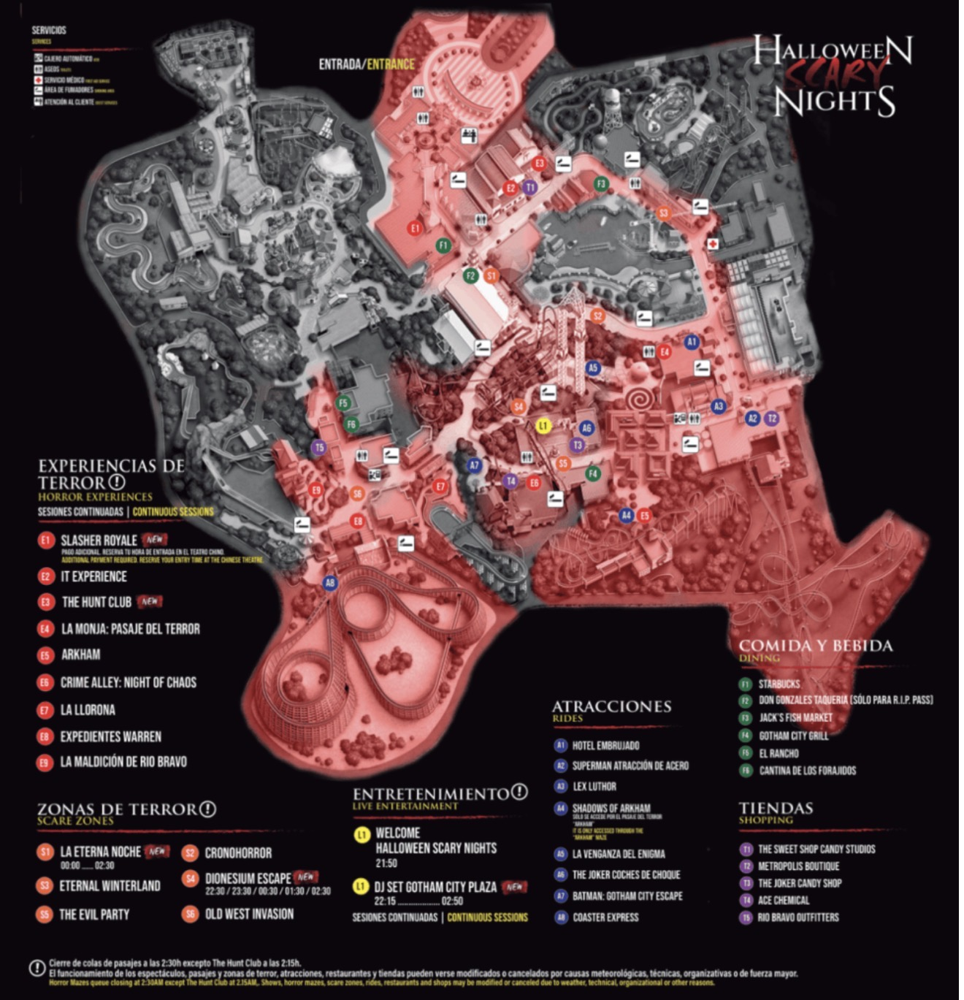

Activa el GPS. Para colocarte en el plano, marca dos puntos conocidos mientras caminas por el parque.
Al pulsar «Marcar», toca en el plano tu posición exacta. Camina al menos 30–50 metros hasta un sitio fácil de identificar y marca el segundo punto allí. Mantén esta página abierta y la pantalla encendida para que el seguimiento siga activo.
Sin calibrar · Ubicación guardada solo en este dispositivo.

Busca el marcador amarillo número 1. Los trazos del plano son orientativos, no senderos garantizados.
Sin ubicación calibrada.
0 de 8 pasajes completados
21:50 · Welcome Halloween Scary Nights · Gotham City Plaza (L1, centro del plano). Reserva tiempo para llegar antes. Duración no confirmada.
De 20:00 a 21:20, comprobáis si están abiertas Batman: Gotham City Escape, Superman o Shadows of Arkham y si tienen poca cola. A partir de las 22:00, prioridad a los pasajes. No se muestran colas en directo.
Colas de pasajes: cierre 02:30; The Hunt Club: 02:15, según el plano facilitado. Los horarios pueden modificarse.
El GPS solo funciona cuando Safari autoriza ubicación y la página se sirve desde una web segura (HTTPS) o localhost. Abrir el archivo directamente desde Archivos no permite confiar en el GPS.
El plano no viene georreferenciado. Tras dos marcas manuales, la aplicación calcula una transformación aproximada entre metros GPS y píxeles. No conoce los caminos reales, accesos, obstáculos, colas ni posición exacta de la entrada. La flecha y distancia son indicaciones en línea recta.
El GPS puede desviarse decenas de metros, especialmente cerca de edificios o atracciones. Si lo ves incorrecto, reinicia y calibra de nuevo. No almacena ni envía tus coordenadas a un servidor: la ubicación se procesa dentro del navegador. Solo se guardan en este dispositivo los dos puntos de calibración y tu progreso. Evita usar la pantalla mientras caminas.